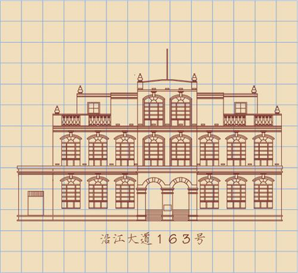

所在街区：江岸区车站路1号 建筑风格：古典主义 建造年代：1905年 现存情况：镇江市博物馆馆址

宋庆龄所居住的这座小楼，始建于1896年，最先是一家专门为俄茶商交易而开设的华俄道胜银行。俄国十月革命后，银行关了门。大革命时期，这幢建筑被武汉国民政府财政部相中，后又为民国中央银行武汉分行。宋庆龄当时住在二楼，这可能是她的弟弟、时任国民政府财政部长宋子文的安排。在这幢小楼里，宋庆龄接待了美国著名作家文森特?希恩、安娜?露易斯?斯特朗等，通过他们向世界介绍了中国革命斗争的史实；她发表了"讨蒋通电"和"七?一四"声明，以维护三民主义和联俄、联共、扶助农工的三大政策。她每日奔波于武汉三镇，兢兢业业地工作，参与了收回英租界、创办妇女训练班、参加了国民党二届三中全会等活动。直至7月17日因时局动乱而被迫离开汉口。